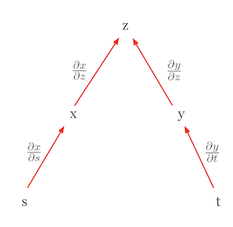

Code
!pip install dldna[colab] # in Colab
# !pip install dldna[all] # in your local 
“Todos los números están compuestos por unidades, y todos los números se pueden dividir en unidades” - Al-Khwarizmi (780-850), matemático persa.
En este capítulo, examinaremos los conceptos matemáticos fundamentales que constituyen el núcleo del aprendizaje profundo. Los modelos de aprendizaje profundo están compuestos por combinaciones de funciones matemáticas complejas. Un entendimiento profundo del álgebra lineal, cálculo, probabilidad y estadística es esencial para comprender el funcionamiento de los modelos, mejorar su rendimiento y diseñar nuevos modelos. Por ejemplo, la comprensión de las operaciones matriciales es crucial para entender cómo funciona una Red Neuronal Convolucional (CNN), mientras que la diferenciación y optimización juegan un papel fundamental en la comprensión del proceso de aprendizaje de los modelos.
Si este capítulo resulta difícil, puede pasar al siguiente. Es aconsejable volver periódicamente para familiarizarse con el contenido.
El álgebra lineal es la base fundamental del aprendizaje profundo. Desde las operaciones matriciales hasta técnicas de optimización avanzadas, el álgebra lineal es una herramienta esencial. En esta sección, abordaremos desde los conceptos básicos como vectores, matrices y tensores hasta temas avanzados como la descomposición en valores singulares y el análisis de componentes principales.
Los vectores y las matrices son las operaciones fundamentales para representar datos y transformar cada dato.
Conceptos básicos de los vectores
Un vector es un objeto matemático que representa una cantidad con magnitud y dirección. La definición matemática es la misma, pero la perspectiva puede variar ligeramente dependiendo del campo de aplicación.
Entender estas perspectivas diversas es importante al trabajar con vectores en el aprendizaje profundo. Aunque en el aprendizaje profundo se utilizan principalmente los vectores desde la perspectiva de ciencias de la computación, también se aplican conceptos matemáticos y intuiciones físicas.
En el aprendizaje profundo, los vectores se utilizan principalmente para representar simultáneamente varias características de los datos. Por ejemplo, un vector de 5 dimensiones utilizado en un modelo de predicción de precios de viviendas puede expresarse como sigue:
\(\mathbf{v} = \begin{bmatrix} v_1 \ v_2 \ v_3 \ v_4 \ v_5 \end{bmatrix}\)
Cada elemento de este vector representa una característica diferente de la vivienda. \(v_1\): área de la vivienda (en metros cuadrados), \(v_2\): número de habitaciones, \(v_3\): edad de la vivienda (en años), \(v_4\): distancia a escuelas cercanas (en kilómetros), \(v_5\): tasa de criminalidad (porcentaje)
Los modelos de aprendizaje profundo pueden usar estos vectores multidimensionales como entrada para predecir el precio de una vivienda. De esta manera, los vectores se utilizan para representar y procesar eficazmente las diversas características de datos complejos del mundo real.
En NumPy, los vectores se pueden crear y utilizar fácilmente.
!pip install dldna[colab] # in Colab
# !pip install dldna[all] # in your localimport numpy as np
# Vector creation
v = np.array([1, 2, 3])
# Vector magnitude (L2 norm)
magnitude = np.linalg.norm(v)
print(f"Vector magnitude: {magnitude}")
# Vector normalization
normalized_v = v / magnitude
print(f"Normalized vector: {normalized_v}")Vector magnitude: 3.7416573867739413
Normalized vector: [0.26726124 0.53452248 0.80178373]Si exploramos más a fondo el concepto de vector, encontramos la distinción entre vectores fila y vectores columna, así como los conceptos de covectores (vectores covariantes) y contravectores (vectores contravariantes), que se utilizan en física e ingeniería.
Vectores fila y vectores columna
Los vectores se representan generalmente como vectores columna. Los vectores fila pueden considerarse la transpuesta de los vectores columna. Matemáticamente, con mayor precisión, un vector fila también puede llamarse covector (dual vector).
Vector columna: \(\mathbf{v} = \begin{bmatrix} v_1 \\ v_2 \\ v_3 \end{bmatrix}\), Vector fila: \(\mathbf{v}^T = [v_1 \quad v_2 \quad v_3]\)
Los vectores fila y los vectores columna tienen propiedades diferentes. Un vector fila actúa como una función lineal sobre un vector columna para producir un escalar. Esto se expresa mediante el producto interno.
\[\mathbf{u}^T\mathbf{v} = u_1v_1 + u_2v_2 + u_3v_3\]
Covectores y contravectores
En física e ingeniería, los conceptos de covector (vector covariante) y contravector (vector contravariante) son tratados con importancia. Estos describen las características de transformación de un vector bajo cambios en el sistema de coordenadas.
En la notación tensorial, esta distinción es crucial. Por ejemplo, \(T^i_j\) indica que el superíndice \(i\) representa contravarianza y el subíndice \(j\) representa covarianza. En teoría de la relatividad general, estos conceptos de covarianza y contravarianza son tratados como fundamentales.
Aplicación en aprendizaje profundo
En el aprendizaje profundo, la distinción entre covarianza y contravarianza a menudo no se enfatiza explícitamente. Esto se debe a las siguientes razones:
Sin embargo, en ciertos campos, particularmente en el aprendizaje de máquinas basado en física o en el aprendizaje profundo geométrico, estos conceptos aún son importantes. Por ejemplo, en modelos de aprendizaje profundo que utilizan geometría diferencial, la distinción entre covarianza y contravarianza puede desempeñar un papel crucial en el diseño e interpretación del modelo.
En conclusión, aunque los conceptos básicos de vectores en el aprendizaje profundo se usan de manera simplificada, ideas matemáticas más complejas siguen siendo importantes en el diseño avanzado de modelos y aplicaciones específicas.
El espacio vectorial, un concepto fundamental del álgebra lineal, proporciona el marco básico para representar y transformar datos en el aprendizaje profundo. En este análisis detallado, examinamos la definición rigurosa de los espacios vectoriales y conceptos relacionados, así como ejemplos de su aplicación en el aprendizaje profundo.
Un espacio vectorial es un conjunto \(V\) que satisface las siguientes 8 axiomas, junto con las operaciones de adición y multiplicación escalar. Aquí, los elementos de \(V\) se denominan vectores, y los escalares son elementos del conjunto de números reales \(\mathbb{R}\) o complejos \(\mathbb{C}\). (En el aprendizaje profundo, se utilizan principalmente números reales).
Adición vectorial (Vector Addition): Para cualquier par de elementos \(\mathbf{u}, \mathbf{v}\) en \(V\), \(\mathbf{u} + \mathbf{v}\) también es un elemento de \(V\). (Cerrado bajo adición, closed under addition)
Multiplicación escalar (Scalar Multiplication): Para cualquier elemento \(\mathbf{u}\) en \(V\) y cualquier escalar \(c\), \(c\mathbf{u}\) también es un elemento de \(V\). (Cerrado bajo multiplicación escalar, closed under scalar multiplication)
La adición vectorial y la multiplicación escalar deben satisfacer los siguientes 8 axiomas. (\(\mathbf{u}, \mathbf{v}, \mathbf{w} \in V\), \(c, d\): escalares)
Ejemplo: * \(\mathbb{R}^n\): espacio vectorial real de \(n\) dimensiones (n-uplas de números reales) * \(\mathbb{C}^n\): espacio vectorial complejo de \(n\) dimensiones * \(M_{m \times n}(\mathbb{R})\): espacio de matrices reales de \(m \times n\) * \(P_n\): espacio de polinomios con coeficientes reales de grado \(\leq n\) * \(C[a, b]\): espacio de funciones valoradas en los reales continuas en el intervalo \([a, b]\)
Un subconjunto \(W\) del espacio vectorial \(V\) es un subespacio si cumple las siguientes condiciones:
Es decir, un subespacio es un subconjunto de un espacio vectorial que también cumple con las propiedades de un espacio vectorial.
Dada una colección de vectores \(\mathbf{v}_1, \mathbf{v}_2, ..., \mathbf{v}_k\) en el espacio vectorial \(V\) y escalares \(c_1, c_2, ..., c_k\), la expresión siguiente se llama combinación lineal:
\(c_1\mathbf{v}_1 + c_2\mathbf{v}_2 + ... + c_k\mathbf{v}_k\)
Un conjunto de vectores {\(\mathbf{v}_1, \mathbf{v}_2, ..., \mathbf{v}_k\)} es linealmente independiente si la única solución a la ecuación
\(c_1\mathbf{v}_1 + c_2\mathbf{v}_2 + ... + c_k\mathbf{v}_k = \mathbf{0}\)
es \(c_1 = c_2 = ... = c_k = 0\).
Si no se cumple esta condición (es decir, existen escalares no todos nulos \(c_1, ..., c_k\) que satisfacen la ecuación anterior), el conjunto de vectores es linealmente dependiente.
Significado intuitivo:
Clave: aunque una base para un espacio vectorial dado no es única, todas las bases tienen el mismo número de vectores.
El span de un conjunto de vectores {\(\mathbf{v}_1, \mathbf{v}_2, ..., \mathbf{v}_k\)} es el conjunto de todas las posibles combinaciones lineales de estos vectores.
span{\(\mathbf{v}_1, \mathbf{v}_2, ..., \mathbf{v}_k\)} = {\(c_1\mathbf{v}_1 + c_2\mathbf{v}_2 + ... + c_k\mathbf{v}_k\) | \(c_1, c_2, ..., c_k\) son escalares}
En otras palabras, es el conjunto de todos los vectores que se pueden formar usando los vectores dados. El span siempre forma un subespacio. #### Ejemplos de espacios vectoriales en el aprendizaje profundo
Medir el tamaño (magnitude) de un vector o la distancia entre dos vectores es muy importante en el aprendizaje profundo. Se utiliza en diversas áreas, como funciones de pérdida, regularización, medición de similitud, etc.
La Lp-norm de un vector \(\mathbf{x} = [x_1, x_2, ..., x_n]\) se define como sigue (\(p \ge 1\)).
\(||\mathbf{x}||_p = \left( \sum_{i=1}^{n} |x_i|^p \right)^{1/p}\)
La distancia entre dos vectores \(\mathbf{x}\) y \(\mathbf{y}\) generalmente se define como la norma de su diferencia.
\(d(\mathbf{x}, \mathbf{y}) = ||\mathbf{x} - \mathbf{y}||\)
Ejemplos de uso en aprendizaje profundo:
Referencia: En el aprendizaje profundo, es importante distinguir entre “distancia” y “similitud”. La distancia es menor cuando la similitud es mayor, y la similitud es mayor cuando los valores son más cercanos. La similitud coseno (cosine similarity) es uno de los métodos de medición de similitud más comúnmente utilizados en el aprendizaje profundo.
El espacio afín es una generalización del concepto de espacio vectorial en álgebra lineal, y es una herramienta útil para entender los modelos de aprendizaje profundo desde un punto de vista geométrico. En particular, la transformación afín representa la forma de agregar un sesgo (bias) a las transformaciones lineales que se utilizan comúnmente en el aprendizaje profundo.
Un espacio afín es una estructura compuesta por tres elementos: (conjunto de puntos, espacio vectorial, adición de punto y vector). Más específicamente,
Esta operación de adición debe satisfacer las siguientes dos propiedades:
Características importantes
Dado un conjunto de puntos \(P_1, P_2, ..., P_k\) en el espacio afín \(\mathcal{A}\) y escalares \(c_1, c_2, ..., c_k\), una combinación afín tiene la siguiente forma:
\(c_1P_1 + c_2P_2 + ... + c_kP_k\) (con la condición de que \(c_1 + c_2 + ... + c_k = 1\))
Importante: A diferencia de las combinaciones lineales, en una combinación afín la suma de los coeficientes debe ser 1. Esta condición refleja la propiedad del espacio afín de que “no tiene un origen”.
Una transformación afín es una función del espacio afín al espacio afín, que se puede expresar como una combinación de una transformación lineal y una traslación. Es decir, una transformación afín incluye tanto una transformación lineal como un sesgo (bias).
\(f(P) = T(P) + \mathbf{b}\)
Representación matricial:
Una transformación afín se puede representar utilizando una matriz aumentada. En un espacio afín de \(n\) dimensiones, se utiliza un vector de \(n+1\) dimensiones para representar la transformación afín como una matriz \((n+1) \times (n+1)\). \(\begin{bmatrix} \mathbf{y} \\ 1 \end{bmatrix} = \begin{bmatrix} \mathbf{A} & \mathbf{b} \\ \mathbf{0}^T & 1 \end{bmatrix} \begin{bmatrix} \mathbf{x} \\ 1 \end{bmatrix}\)
En investigaciones recientes en aprendizaje profundo, se han propuesto modelos que eliminan los términos de sesgo (bias) para mejorar la eficiencia computacional, la interpretabilidad del modelo o basándose en ciertos marcos teóricos.
Razones para eliminar el sesgo
El concepto de espacio afín y transformación afín puede ser utilizado en la interpretación geométrica de los modelos de aprendizaje profundo, en el análisis del rendimiento de generalización y en el diseño de nuevas arquitecturas.
Los términos relacionados con tensores, vectores y matrices se utilizan de manera ligeramente diferente en las áreas de matemáticas, física y ciencias de la computación, lo que puede causar confusión. Para evitar esta confusión, revisemos los conceptos principales. Primero, examinaremos el rango y las dimensiones de un tensor. El rango de un tensor se refiere al número de índices que tiene el tensor. Por ejemplo, un escalar es un tensor de rango 0, un vector es un tensor de rango 1, una matriz es un tensor de rango 2. Los tensores de tres o más dimensiones generalmente se denominan simplemente tensores.
El término “dimensión” puede tener dos significados diferentes y requiere atención. En primer lugar, a veces se usa en el mismo sentido que el rango del tensor. En este caso, un vector se llama tensor de una dimensión, y una matriz se llama tensor de dos dimensiones. En segundo lugar, también se puede usar para indicar la longitud o tamaño de un arreglo. Por ejemplo, cuando decimos que las dimensiones del vector \(\mathbf{a} = [1, 2, 3, 4]\) son 4, nos referimos a esto.
Es importante conocer las diferencias en el uso de los términos según el campo. En física, el número de elementos tiene un significado físico, por lo que tiende a usarse más estrictamente. Por otro lado, en ciencias de la computación, se tratan los vectores, matrices y tensores principalmente como arreglos de números, y el término “dimensión” se usa indistintamente para referirse tanto al número de datos como al número de índices.
Para evitar confusiones debido a estas diferencias en el uso de términos, hay algunos puntos que deben tenerse en cuenta. El significado de los términos puede variar según el contexto y debe interpretarse con cuidado. Es necesario distinguir claramente cómo se usa “dimensión” en un artículo o libro. En particular, en el campo del aprendizaje profundo, a menudo se utiliza “dimensión” para referirse tanto al rango del tensor como al tamaño de la matriz, por lo que una interpretación coherente es importante.
En los marcos de aprendizaje profundo, los términos ‘dimensión’ o ‘eje’ se utilizan para describir la forma (shape) de un tensor. Por ejemplo, en PyTorch, se puede verificar el tamaño de cada dimensión del tensor mediante tensor.shape o tensor.size(). En este libro, el rango de un tensor (rank) se denominará ‘dimensión’, y la longitud/tamaño del arreglo se expresará como los valores de los elementos de shape o como dimensiones.
Vamos a revisar las matemáticas necesarias para el entrenamiento de deep learning. La transformación lineal, que es una operación central en las redes neuronales, se expresa muy simplemente en el cálculo forward. En esta sección nos centraremos en las operaciones lineales básicas antes de pasar por la función de activación.
La forma básica del cálculo forward es la siguiente.
\[\boldsymbol y = \boldsymbol x \boldsymbol W + \boldsymbol b\]
Aquí, \(\boldsymbol x\) es la entrada, \(\boldsymbol W\) son los pesos, \(\boldsymbol b\) es el sesgo, y \(\boldsymbol y\) es la salida. En las matemáticas de las redes neuronales, las entradas y salidas a menudo se representan como vectores, mientras que los pesos se representan como matrices. El sesgo (\(\boldsymbol b\)) puede representarse a veces como un valor escalar, pero técnicamente debe ser un vector del mismo tamaño que la salida.
Matrices y transformaciones lineales
Las matrices son una herramienta poderosa para representar transformaciones lineales. Una transformación lineal es un proceso que mapea un punto en el espacio de vectores a otro punto, lo cual se puede ver como una deformación del espacio completo. Para comprender este concepto visualmente, recomiendo el video “Linear transformations and matrices” de 3Blue1Brown[1]. Este video explica de manera intuitiva los conceptos básicos del álgebra lineal y muestra claramente cómo las matrices deforman el espacio.
Cuando la entrada de datos \(\boldsymbol x\) se representa como un vector, esto significa un solo punto de datos y la longitud del vector es igual al número de características. Sin embargo, en el proceso de entrenamiento real, generalmente se procesan múltiples datos a la vez. En este caso, la entrada es una matriz \(\boldsymbol X\) de forma (n, m), donde n es el número de datos y m es el número de características.
En modelos de deep learning reales, los datos de entrada pueden tener formas tensoriales de más alta dimensión que las matrices bidimensionales.
Las redes neuronales utilizan varias formas de transformaciones lineales y no lineales para procesar estos datos de alta dimensión. El proceso de retropropagación en las transformaciones lineales implica calcular los gradientes y pasarlos hacia atrás a través de cada capa para actualizar los parámetros. Aunque este proceso puede ser complejo, se realiza eficientemente con herramientas de diferenciación automática. Aunque la transformación lineal es un componente fundamental de los modelos de deep learning, el rendimiento real de estos modelos se obtiene a través de la combinación con funciones de activación no lineales. En la próxima sección, examinaremos cómo esta no linealidad aumenta la capacidad de representación del modelo.
# if in Colab, plase don't run this and below code. just see the result video bleow the following cell.
#from manim import * %%manim -qh -v WARNING LinearTransformations
from manim import *
from manim import config
class LinearTransformations(ThreeDScene):
def construct(self):
self.set_camera_orientation(phi=75 * DEGREES, theta=-45 * DEGREES)
axes = ThreeDAxes(x_range=[-6, 6, 1], y_range=[-6, 6, 1], z_range=[-6, 6, 1], x_length=10, y_length=10, z_length=10).set_color(GRAY)
self.add(axes)
# --- 3D Linear Transformation (Rotation and Shear) ---
title = Text("3D Linear Transformations", color=BLACK).to_edge(UP)
self.play(Write(title))
self.wait(1)
# 1. Rotation around Z-axis
text_rotation = Text("Rotation around Z-axis", color=BLUE).scale(0.7).next_to(title, DOWN, buff=0.5)
self.play(Write(text_rotation))
cube = Cube(side_length=2, fill_color=BLUE, fill_opacity=0.5, stroke_color=WHITE, stroke_width=1)
self.play(Create(cube))
self.play(Rotate(cube, angle=PI/2, axis=OUT, about_point=ORIGIN), run_time=2)
self.wait(1)
self.play(FadeOut(text_rotation))
# 2. Shear
text_shear = Text("Shear Transformation", color=GREEN).scale(0.7).next_to(title, DOWN, buff=0.5)
self.play(Write(text_shear))
# Define the shear transformation matrix. This shears in x relative to y, and in y relative to x.
shear_matrix = np.array([
[1, 0.5, 0],
[0.5, 1, 0],
[0, 0, 1]
])
self.play(
cube.animate.apply_matrix(shear_matrix),
run_time=2,
)
self.wait(1)
# Add transformed axes to visualize the shear
transformed_axes = axes.copy().apply_matrix(shear_matrix)
self.play(Create(transformed_axes), run_time=1)
self.wait(1)
self.play(FadeOut(cube), FadeOut(transformed_axes), FadeOut(text_shear))
# --- 2D to 3D Transformation (Paraboloid) ---
text_2d_to_3d = Text("2D to 3D: Paraboloid", color=MAROON).scale(0.7).next_to(title, DOWN, buff=0.5)
self.play(Write(text_2d_to_3d))
square = Square(side_length=4, fill_color=MAROON, fill_opacity=0.5, stroke_color=WHITE, stroke_width=1)
self.play(Create(square))
def paraboloid(point): # Function for the transformation
x, y, _ = point
return [x, y, 0.2 * (x**2 + y**2)] # Adjust scaling factor (0.2) as needed
paraboloid_surface = always_redraw(lambda: Surface(
lambda u, v: axes.c2p(*paraboloid(axes.p2c(np.array([u,v,0])))),
u_range=[-2, 2],
v_range=[-2, 2],
resolution=(15, 15), # Added for smoothness
fill_color=MAROON,
fill_opacity=0.7,
stroke_color=WHITE,
stroke_width=0.5
).set_shade_in_3d(True))
self.play(
Transform(square, paraboloid_surface),
run_time=3,
)
self.wait(2)
self.play(FadeOut(square), FadeOut(text_2d_to_3d))
# --- 3D to 2D Transformation (Projection) ---
text_3d_to_2d = Text("3D to 2D: Projection", color=PURPLE).scale(0.7).next_to(title, DOWN, buff=0.5)
self.play(Write(text_3d_to_2d))
sphere = Sphere(radius=1.5, fill_color=PURPLE, fill_opacity=0.7, stroke_color=WHITE, stroke_width=1, resolution=(20,20)).set_shade_in_3d(True)
self.play(Create(sphere))
def project_to_2d(mob, alpha):
for p in mob.points:
p[2] *= (1-alpha)
self.play(
UpdateFromAlphaFunc(sphere, project_to_2d),
run_time=2
)
self.wait(1)
# Show a circle representing the final projection
circle = Circle(radius=1.5, color=PURPLE, fill_opacity=0.7, stroke_color = WHITE, stroke_width=1)
self.add(circle)
self.wait(1)
self.play(FadeOut(sphere), FadeOut(text_3d_to_2d), FadeOut(circle), FadeOut(title))
self.wait(1)
import logging
logging.getLogger("manim").setLevel(logging.WARNING)
if __name__ == "__main__":
config.video_dir = "./"
scene = LinearTransformations()
scene.render()Desafío: ¿Cómo se pueden expresar y operar eficientemente los datos multidimensionales?
Lucha del investigador: Al principio del aprendizaje profundo, los investigadores tuvieron que manejar diferentes tipos de datos, como imágenes, texto, audio, entre otros. Estos datos eran difíciles de representar con vectores o matrices simples y se necesitaba un método para procesar eficazmente estructuras de datos complejas. Además, era una tarea importante encontrar formas eficientes de procesar rápidamente grandes volúmenes de datos.
Los tensores son los objetos matemáticos básicos utilizados en el aprendizaje profundo para representar datos y parámetros del modelo. Son un concepto generalizado que incluye escalares, vectores y matrices, y pueden pensarse como arreglos multidimensionales. Los tensores se clasifican según su dimensión (dimensión, rango) de la siguiente manera:
En el aprendizaje profundo, se manejan principalmente los siguientes tipos de tensores:
La transformación lineal básica en una red neuronal es la siguiente.
\(y_j = \sum\limits_{i} x_i w_{ij} + b_j\)
Aquí, \(i\) es el índice de entrada y \(j\) es el índice de salida. Esto se puede expresar en forma de vector y matriz de la siguiente manera.
\(\boldsymbol x = \begin{bmatrix}x_{1} & x_{2} & \cdots & x_{i} \end{bmatrix}\)
\(\boldsymbol W = \begin{bmatrix} w_{11} & \cdots & w_{1j} \ \vdots & \ddots & \vdots \ w_{i1} & \cdots & w_{ij} \end{bmatrix}\)
\(\boldsymbol y = \boldsymbol x \boldsymbol W + \boldsymbol b\)
Las principales características de las operaciones de tensores son:
Broadcasting: Permite realizar operaciones entre tensores de diferentes tamaños.
Reducción de dimensiones: Se pueden reducir dimensiones específicas de un tensor usando operaciones como sum(), mean(), etc.
Reshape (reformado): Permite cambiar la forma del tensor para convertirlo en un tensor de otras dimensiones.
Una de las operaciones más importantes en el aprendizaje de redes neuronales es el cálculo de gradientes. Los principales cálculos de gradientes son:
Gradiente con respecto a la entrada: \(\frac{\partial \boldsymbol y}{\partial \boldsymbol{x}}\)
Gradiente con respecto a los pesos: \(\frac{\partial \boldsymbol y}{\partial \boldsymbol W}\)
Estos gradientes representan el cambio en la salida debido al cambio en las entradas y los pesos, respectivamente, y son fundamentales para el algoritmo de retropropagación. Las operaciones de tensor son fundamentales en el aprendizaje profundo moderno, y permiten un procesamiento paralelo avanzado mediante el uso de GPU, facilitando así el entrenamiento eficiente y la inferencia de modelos a gran escala. Además, la diferenciación automática (automatic differentiation) de las operaciones de tensor posibilita cálculos de gradiente eficientes, convirtiéndose en un punto de inflexión crucial en la investigación moderna de aprendizaje profundo. Esto va más allá de simples cálculos numéricos y transforma la estructura del modelo y el propio proceso de aprendizaje en objetos programables. Veremos ejemplos prácticos de operaciones de tensor en el Capítulo 3 sobre PyTorch.
Uso en el aprendizaje profundo:
SVD vs. PCA
SVD y PCA son herramientas matemáticas importantes que juegan un papel crucial en el aprendizaje profundo para representar eficientemente los datos y mejorar el rendimiento del modelo.
from dldna.chapter_02.pca import visualize_pca
visualize_pca()
Explained variance ratio: 0.5705Este ejemplo muestra la capacidad de PCA para proyectar estructuras 2D complejas a una dimensión. En el caso de datos espirales, un solo componente principal no puede capturar toda la variabilidad, pero puede capturar la tendencia principal de los datos. A través de la proporción de varianza explicada, se puede evaluar qué tan bien esta representación unidimensional preserva la estructura de los datos originales.
Estas técnicas son herramientas poderosas para extraer patrones importantes de datos complejos.
SVD y PCA son herramientas poderosas para extraer patrones importantes de datos de alta dimensión y simplificar estructuras de datos complejas.
Desafío: ¿Cómo se pueden calcular eficientemente las derivadas de funciones complejas y anidadas?
Dilema del investigador: Los primeros investigadores en aprendizaje profundo tenían que utilizar el algoritmo de retropropagación para actualizar los pesos de las redes neuronales. Sin embargo, las redes neuronales son estructuras en las que varias capas de funciones están conectadas de manera compleja, por lo que calcular la derivada de la función de pérdida con respecto a cada peso era un problema muy difícil. En particular, a medida que aumentaba el número de capas, la cantidad de cálculos crecía exponencialmente, haciendo que el aprendizaje fuera ineficiente.
La regla de la cadena es una de las reglas de cálculo más importantes utilizadas en el aprendizaje profundo. La regla de la cadena es una regla poderosa y elegante que permite expresar la derivada de una función compuesta como el producto de las derivadas de las funciones componentes. Visualizar la regla de la cadena puede facilitar la comprensión del concepto. Por ejemplo, supongamos que \(z\) es una función de \(x\) y \(y\), y que \(x\) y \(y\) son a su vez funciones de \(s\) y \(t\). Esta relación se puede representar mediante un diagrama de árbol.

En este diagrama, la derivada parcial de \(z\) con respecto a \(s\), \(\frac{\partial z}{\partial s}\), es igual a la suma de los productos de las derivadas parciales a lo largo de todas las rutas desde \(z\) hasta \(s\).
\(\frac{\partial z}{\partial s} = \frac{\partial z}{\partial x} \frac{\partial x}{\partial s} + \frac{\partial z}{\partial y} \frac{\partial y}{\partial s}\)
En esta fórmula,
Consideremos otro caso donde la regla de la cadena se utiliza para expresar una diferencial total. Consideremos el caso en que \(z\) es una función de variables independientes. En este caso, la regla de la cadena se simplifica a la forma de una diferencial total. Por ejemplo, si \(z = f(x, y)\) con \(x = g(s)\) y \(y = h(t)\), y si \(s\) y \(t\) son independientes entre sí, entonces la diferencial total de \(z\) se puede expresar como sigue.

\(dz = \frac{\partial z}{\partial x}dx + \frac{\partial z}{\partial y}dy\)
Aquí, \(dx = \frac{\partial x}{\partial s}ds\) y \(dy = \frac{\partial y}{\partial t}dt\), por lo que finalmente se obtiene la siguiente forma.
\(dz = \frac{\partial z}{\partial x}\frac{\partial x}{\partial s}ds + \frac{\partial z}{\partial y}\frac{\partial y}{\partial t}dt\)
Esta ecuación tiene una forma similar a la de la regla de la cadena, pero en realidad representa una diferencial total. Un punto importante aquí es que \(s\) y \(t\) son independientes, por lo que \(\frac{\partial x}{\partial t}\) y \(\frac{\partial y}{\partial s}\) son 0. Esta forma es una diferencial total. La diferencial total representa el impacto total del cambio en todas las variables independientes sobre el valor de la función, expresada como la suma de las derivadas parciales con respecto a cada variable. La estructura de la regla de la cadena permite descomponer la derivada de una función compleja en partes más simples. Esto es especialmente importante en el aprendizaje profundo, ya que las redes neuronales tienen una estructura compuesta por múltiples capas de funciones superpuestas. El uso de diagramas de árbol facilita la aplicación de la regla de la cadena incluso en situaciones más complejas. Se trata de encontrar todas las rutas desde la variable dependiente hasta las variables independientes a través de las variables intermedias, multiplicar las derivadas parciales a lo largo de cada ruta y sumar todos estos resultados.
La regla de la cadena es la base matemática del algoritmo de retropropagación en el aprendizaje profundo. Proporciona los fundamentos para actualizar eficientemente los pesos en modelos de redes neuronales complejas.
Desafío: ¿Cómo se pueden generalizar las derivadas para funciones con diferentes formas de entrada y salida?
Reflexión del investigador: En sus inicios, el aprendizaje profundo se centró principalmente en funciones escalares, pero gradualmente comenzó a abordar funciones con entradas y salidas de diferentes formas, como vectores y matrices. Expresar y calcular las derivadas de estas funciones de manera uniforme fue una tarea esencial en el desarrollo de marcos de aprendizaje profundo.
En el aprendizaje profundo se tratan funciones con diferentes formas de entrada (escalares, vectores, matrices, tensores) y salida (escalares, vectores, matrices, tensores). En consecuencia, la representación de las derivadas (o gradientes) de estas funciones también varía. La clave es expresar coherentemente las derivadas en estos diferentes casos y aplicar la regla de la cadena para calcularlas de manera eficiente.
Gradiente (Gradient): Expresión utilizada al diferenciar una función escalar con respecto a un vector. Es un vector columna que contiene las derivadas parciales de la función con respecto a cada elemento del vector de entrada. Indica la dirección de mayor ascenso de la función.
Matriz Jacobiana (Jacobian Matrix): Expresión utilizada al diferenciar una función vectorial con respecto a un vector. Es una matriz que contiene las derivadas parciales de cada elemento del vector de salida con respecto a cada elemento del vector de entrada.
| Forma de entrada | Forma de salida | Representación de la derivada | Dimensiones |
|---|---|---|---|
| Vector (\(\mathbf{x}\)) | Vector (\(\mathbf{f}\)) | Matriz Jacobiana (\(\mathbf{J} = \frac{\partial \mathbf{f}}{\partial \mathbf{x}}\)) | \(n \times m\) |
| Matriz (\(\mathbf{X}\)) | Vector (\(\mathbf{f}\)) | Tensor tridimensional (generalmente no se maneja bien) | - |
| Vector (\(\mathbf{x}\)) | Matriz (\(\mathbf{F}\)) | Tensor tridimensional (generalmente no se maneja bien) | - |
| Escalar (\(x\)) | Vector (\(\mathbf{f}\)) | Vector columna (\(\frac{\partial \mathbf{f}}{\partial x}\)) | \(n \times 1\) |
| Vector (\(\mathbf{x}\)) | Escalar (\(f\)) | Gradiente (\(\nabla f = \frac{\partial f}{\partial \mathbf{x}}\)) | \(m \times 1\) (vector columna) |
| Matriz (\(\mathbf{X}\)) | Escalar (\(f\)) | Matriz (\(\frac{\partial f}{\partial \mathbf{X}}\)) | \(m \times n\) |
Referencia:
De esta manera, los conceptos de gradientes y matrices jacobianas son herramientas esenciales en el aprendizaje profundo para generalizar la diferenciación de funciones de varias formas y aprender modelos de manera eficiente a través de la retropropagación.
Definición: La matriz Hessiana es una representación matricial de las derivadas parciales de segundo orden de una función escalar (scalar-valued function). Es decir, dada una función \(f(x_1, x_2, ..., x_n)\), la matriz Hessiana \(H\) se define como:
\[ H = \begin{bmatrix} \frac{\partial^2 f}{\partial x_1^2} & \frac{\partial^2 f}{\partial x_1 \partial x_2} & \cdots & \frac{\partial^2 f}{\partial x_1 \partial x_n} \\ \frac{\partial^2 f}{\partial x_2 \partial x_1} & \frac{\partial^2 f}{\partial x_2^2} & \cdots & \frac{\partial^2 f}{\partial x_2 \partial x_n} \\ \vdots & \vdots & \ddots & \vdots \\ \frac{\partial^2 f}{\partial x_n \partial x_1} & \frac{\partial^2 f}{\partial x_n \partial x_2} & \cdots & \frac{\partial^2 f}{\partial x_n^2} \end{bmatrix} \]
Significado:
El núcleo del aprendizaje de las redes neuronales es el algoritmo de retropropagación (Backpropagation). La retropropagación es un método eficiente para propagar el error que ocurre en la capa de salida hacia la capa de entrada, actualizando los pesos y sesgos de cada capa. En este proceso, la regla de la cadena (Chain Rule) permite expresar la derivada de funciones compuestas complejas como el producto de derivadas simples, lo que facilita los cálculos.
Las redes neuronales consisten en una composición de funciones en múltiples capas. Por ejemplo, una red neuronal de dos capas puede expresarse como sigue:
\(\mathbf{z} = f_1(\mathbf{x}; \mathbf{W_1}, \mathbf{b_1})\) \(\mathbf{y} = f_2(\mathbf{z}; \mathbf{W_2}, \mathbf{b_2})\)
Aquí, \(\mathbf{x}\) es la entrada, \(\mathbf{z}\) es la salida de la primera capa (entrada de la segunda capa), \(\mathbf{y}\) es la salida final, \(\mathbf{W_1}\), \(\mathbf{b_1}\) son los pesos y sesgos de la primera capa, \(\mathbf{W_2}\), \(\mathbf{b_2}\) son los pesos y sesgos de la segunda capa.
Durante el proceso de retropropagación, debemos calcular los gradientes del error \(E\) con respecto a cada parámetro (\(\frac{\partial E}{\partial \mathbf{W_1}}\), \(\frac{\partial E}{\partial \mathbf{b_1}}\), \(\frac{\partial E}{\partial \mathbf{W_2}}\), \(\frac{\partial E}{\partial \mathbf{b_2}}\)). Al aplicar la regla de la cadena, podemos realizar los cálculos como sigue:
\(\frac{\partial E}{\partial \mathbf{W_2}} = \frac{\partial E}{\partial \mathbf{y}} \frac{\partial \mathbf{y}}{\partial \mathbf{W_2}}\) \(\frac{\partial E}{\partial \mathbf{b_2}} = \frac{\partial E}{\partial \mathbf{y}} \frac{\partial \mathbf{y}}{\partial \mathbf{b_2}}\) \(\frac{\partial E}{\partial \mathbf{W_1}} = \frac{\partial E}{\partial \mathbf{y}} \frac{\partial \mathbf{y}}{\partial \mathbf{z}} \frac{\partial \mathbf{z}}{\partial \mathbf{W_1}}\) \(\frac{\partial E}{\partial \mathbf{b_1}} = \frac{\partial E}{\partial \mathbf{y}} \frac{\partial \mathbf{y}}{\partial \mathbf{z}} \frac{\partial \mathbf{z}}{\partial \mathbf{b_1}}\)
De esta manera, utilizando la regla de la cadena, podemos descomponer los gradientes de cada parámetro en una red neuronal compleja en productos de derivadas sucesivas y calcularlos eficientemente. La teoría detallada del proceso se explica en 2.2.4.
Basados en estos conceptos, en la siguiente sección examinaremos detalladamente el método de cálculo de gradientes durante el proceso de retropropagación, junto con ejemplos específicos.
El núcleo de la propagación hacia atrás es calcular los gradientes de la función de pérdida (Loss Function) para actualizar los pesos. Tomemos como ejemplo una transformación lineal simple (\(\mathbf{y} = \mathbf{xW} + \mathbf{b}\)) para examinar el proceso de propagación hacia atrás.
La propagación hacia atrás es un algoritmo que propaga el error calculado en la capa de salida hacia la capa de entrada, actualizando cada peso según su contribución al error. El cálculo de los gradientes de la función de pérdida con respecto a cada peso es fundamental en este proceso.
Si usamos el error cuadrático medio (Mean Squared Error, MSE) como función de pérdida, el gradiente de la función de pérdida \(E\) con respecto a la salida \(\mathbf{y}\) se expresa de la siguiente manera:
\(E = \frac{1}{M} \sum_{i=1}^{M} (y_i - \hat{y}_i)^2\)
\(\frac{\partial E}{\partial \mathbf{y}} = \frac{2}{M}(\mathbf{y} - \hat{\mathbf{y}})\)
Aquí, \(y_i\) es el valor real, \(\hat{y}_i\) es el valor predicho por el modelo, y \(M\) es el número de datos.
Aplicando la regla de la cadena, podemos calcular el gradiente de la función de pérdida \(E\) con respecto a los pesos \(\mathbf{W}\):
\(\frac{\partial E}{\partial \mathbf{W}} = \frac{\partial E}{\partial \mathbf{y}} \frac{\partial \mathbf{y}}{\partial \mathbf{W}}\)
Dado que \(\mathbf{y} = \mathbf{xW} + \mathbf{b}\), tenemos \(\frac{\partial \mathbf{y}}{\partial \mathbf{W}} = \mathbf{x}^T\).
Finalmente, el gradiente con respecto a los pesos se expresa de la siguiente manera:
\(\frac{\partial E}{\partial \mathbf{W}} = \mathbf{x}^T \frac{\partial E}{\partial \mathbf{y}}\)
El gradiente de la función de pérdida \(E\) con respecto a la entrada \(\mathbf{x}\) se utiliza para propagar el error hacia la capa anterior:
\(\frac{\partial E}{\partial \mathbf{x}} = \frac{\partial E}{\partial \mathbf{y}} \frac{\partial \mathbf{y}}{\partial \mathbf{x}}\)
Dado que \(\mathbf{y} = \mathbf{xW} + \mathbf{b}\), tenemos \(\frac{\partial \mathbf{y}}{\partial \mathbf{x}} = \mathbf{W}^T\).
Por lo tanto, el gradiente con respecto a la entrada es:
\(\frac{\partial E}{\partial \mathbf{x}} = \frac{\partial E}{\partial \mathbf{y}} \mathbf{W}^T\)
La propagación hacia atrás se realiza a través de los siguientes pasos clave. 1. Propagación hacia adelante (Forward Propagation): se pasa el dato de entrada \(\mathbf{x}\) a través de la red neuronal para calcular la predicción \(\hat{\mathbf{y}}\). 2. Cálculo de la función de pérdida: se compara la predicción \(\hat{\mathbf{y}}\) con el valor real \(\mathbf{y}\) para calcular la pérdida \(E\). 3. Propagación hacia atrás (Backward Propagation): * se calcula el gradiente de la función de pérdida respecto a la capa de salida \(\frac{\partial E}{\partial \mathbf{y}}\). * utilizando la regla de la cadena, se calcula el gradiente con respecto a los pesos \(\frac{\partial E}{\partial \mathbf{W}} = \mathbf{x}^T \frac{\partial E}{\partial \mathbf{y}}\). * se calcula el gradiente con respecto a las entradas \(\frac{\partial E}{\partial \mathbf{x}} = \frac{\partial E}{\partial \mathbf{y}} \mathbf{W}^T\) para propagar el error hacia la capa anterior. 4. Actualización de los pesos: se utilizan los gradientes calculados para actualizar los pesos mediante algoritmos de optimización como el descenso por gradiente.
El algoritmo de propagación hacia atrás es fundamental en el entrenamiento de modelos de aprendizaje profundo, permitiendo aproximar eficazmente funciones no lineales complejas.
La clave de la retropropagación es calcular el gradiente de la función de pérdida (Loss Function) para actualizar los pesos. Tomemos como ejemplo una transformación lineal simple (\(\mathbf{y} = \mathbf{xW} + \mathbf{b}\)) y examinemos el proceso de retropropagación. Aquí explicamos el proceso de cálculo en detalle.
El objetivo del aprendizaje de redes neuronales es minimizar la función de pérdida \(E\). Cuando se utiliza el error cuadrático medio (MSE) como función de pérdida, esto se ve de la siguiente manera.
\(E = f(\mathbf{y}) = \frac{1}{M} \sum_{i=1}^{M} (y_i - \hat{y}_i)^2\)
Aquí, \(y_i\) es el valor real, \(\hat{y}_i\) es el valor predicho y \(M\) es el número de datos (o la dimensión del vector de salida).
La derivada de \(E\) con respecto a \(\mathbf{y}\) es:
\(\frac{\partial E}{\partial \mathbf{y}} = \frac{2}{M} (\mathbf{y} - \hat{\mathbf{y}})\)
Aquí, \(\mathbf{y}\) es el vector de salida de la red neuronal y \(\hat{\mathbf{y}}\) es el vector de valores reales (objetivos). Como \(y_i\) son constantes (cada elemento del objetivo), solo quedan las derivadas parciales con respecto a \(\mathbf{y}\).
Nota: En el código de ejemplo del Capítulo 1, se utilizó el término \(-\frac{2}{M}\). Esto fue debido a que la definición de la función de pérdida incluía un signo negativo (-). Aquí usamos la definición general de MSE, por lo que se utiliza el valor positivo \(\frac{2}{M}\). En el aprendizaje real, este constante se multiplica por la tasa de aprendizaje (learning rate), por lo que su magnitud absoluta no es crucial.
Ahora, calculemos el gradiente de la función de pérdida \(E\) con respecto a los pesos \(\mathbf{W}\). Dado que \(E = f(\mathbf{y})\) y \(\mathbf{y} = \mathbf{xW} + \mathbf{b}\), donde \(\mathbf{x}\) es el vector de entrada, \(\mathbf{W}\) es la matriz de pesos y \(\mathbf{b}\) es el vector de sesgo.
Gráfico de cálculo:
Para visualizar el proceso de retropropagación, se puede usar un gráfico de cálculo. (Inserción de imagen del gráfico de cálculo)
\(E\) es un valor escalar y necesitamos calcular la derivada parcial de \(E\) con respecto a cada \(w_{ij}\) (cada elemento de la matriz de pesos \(\mathbf{W}\)). \(\mathbf{W}\) es una matriz de tamaño (dimensión de entrada) x (dimensión de salida). Por ejemplo, si la entrada tiene 3 dimensiones (\(x_1, x_2, x_3\)) y la salida tiene 2 dimensiones (\(y_1, y_2\)), entonces \(\mathbf{W}\) es una matriz de 3x2.
\(\frac{\partial E}{\partial \mathbf{W}} = \begin{bmatrix} \frac{\partial E}{\partial w_{11}} & \frac{\partial E}{\partial w_{12}} \\ \frac{\partial E}{\partial w_{21}} & \frac{\partial E}{\partial w_{22}} \\ \frac{\partial E}{\partial w_{31}} & \frac{\partial E}{\partial w_{32}} \end{bmatrix}\)
La derivada de \(E\) con respecto a \(\mathbf{y}\) puede expresarse como un vector fila: \(\frac{\partial E}{\partial \mathbf{y}} = \begin{bmatrix} \frac{\partial E}{\partial y_1} & \frac{\partial E}{\partial y_2} \end{bmatrix}\) (usando la notación de numerador). Técnicamente, el gradiente debe expresarse como un vector columna, pero aquí usamos un vector fila por conveniencia en los cálculos.
Por la regla de la cadena, \(\frac{\partial E}{\partial \mathbf{W}} = \frac{\partial E}{\partial \mathbf{y}} \frac{\partial \mathbf{y}}{\partial \mathbf{W}}\)
\(\frac{\partial E}{\partial w_{ij}} = \sum_k \frac{\partial E}{\partial y_k} \frac{\partial y_k}{\partial w_{ij}}\) (donde \(k\) es el índice del vector de salida \(\mathbf{y}\))
Desarrollando la ecuación anterior,
\(\frac{\partial E}{\partial \mathbf{W}} = \frac{\partial E}{\partial y_1} \frac{\partial y_1}{\partial \mathbf{W}} + \frac{\partial E}{\partial y_2} \frac{\partial y_2}{\partial \mathbf{W}}\)
Ahora debemos calcular \(\frac{\partial y_k}{\partial w_{ij}}\). Dado que \(\mathbf{y} = \mathbf{xW} + \mathbf{b}\),
\(y_1 = x_1w_{11} + x_2w_{21} + x_3w_{31} + b_1\) \(y_2 = x_1w_{12} + x_2w_{22} + x_3w_{32} + b_2\)
\(\frac{\partial y_1}{\partial w_{ij}} = \begin{bmatrix} \frac{\partial y_1}{\partial w_{11}} & \frac{\partial y_1}{\partial w_{12}} \\ \frac{\partial y_1}{\partial w_{21}} & \frac{\partial y_1}{\partial w_{22}} \\ \frac{\partial y_1}{\partial w_{31}} & \frac{\partial y_1}{\partial w_{32}} \end{bmatrix} = \begin{bmatrix} x_1 & 0 \\ x_2 & 0 \\ x_3 & 0 \end{bmatrix}\)
\(\frac{\partial y_2}{\partial w_{ij}} = \begin{bmatrix} 0 & x_1 \\ 0 & x_2 \\ 0 & x_3 \end{bmatrix}\)
Por lo tanto,
\(\frac{\partial E}{\partial \mathbf{W}} = \frac{\partial E}{\partial y_1} \begin{bmatrix} x_1 & 0 \\ x_2 & 0 \\ x_3 & 0 \end{bmatrix} + \frac{\partial E}{\partial y_2} \begin{bmatrix} 0 & x_1 \\ 0 & x_2 \\ 0 & x_3 \end{bmatrix} = \begin{bmatrix} \frac{\partial E}{\partial y_1}x_1 & \frac{\partial E}{\partial y_2}x_1 \\ \frac{\partial E}{\partial y_1}x_2 & \frac{\partial E}{\partial y_2}x_2 \\ \frac{\partial E}{\partial y_1}x_3 & \frac{\partial E}{\partial y_2}x_3 \end{bmatrix} = \begin{bmatrix} x_1 \\ x_2 \\ x_3 \end{bmatrix} \begin{bmatrix} \frac{\partial E}{\partial y_1} & \frac{\partial E}{\partial y_2} \end{bmatrix} = \mathbf{x}^T \frac{\partial E}{\partial \mathbf{y}}\)
Generalización:
Cuando la entrada es un vector fila \(1 \times m\) \(\mathbf{x}\), y la salida es un vector fila \(1 \times n\) \(\mathbf{y}\), los pesos \(\mathbf{W}\) son una matriz \(m \times n\). En este caso, \(\frac{\partial E}{\partial \mathbf{W}} = \mathbf{x}^T \frac{\partial E}{\partial \mathbf{y}}\)
El gradiente de la función de pérdida \(E\) con respecto a la entrada \(\mathbf{x}\) también se puede calcular utilizando la regla de la cadena.
\(\frac{\partial E}{\partial \mathbf{x}} = \frac{\partial E}{\partial \mathbf{y}} \frac{\partial \mathbf{y}}{\partial \mathbf{x}}\)
Dado que \(\mathbf{y} = \mathbf{xW} + \mathbf{b}\), entonces \(\frac{\partial \mathbf{y}}{\partial \mathbf{x}} = \mathbf{W}^T\).
Por lo tanto,
\(\frac{\partial E}{\partial \mathbf{x}} = \frac{\partial E}{\partial \mathbf{y}} \mathbf{W}^T\)
El gradiente de la función de pérdida con respecto al sesgo \(\mathbf{b}\) es el siguiente.
\(\frac{\partial E}{\partial \mathbf{b}} = \frac{\partial E}{\partial \mathbf{y}} \frac{\partial \mathbf{y}}{\partial \mathbf{b}}\)
Dado que \(\mathbf{y} = \mathbf{xW} + \mathbf{b}\), entonces \(\frac{\partial \mathbf{y}}{\partial \mathbf{b}} = \begin{bmatrix} 1 & 1 & \dots & 1\end{bmatrix}\) (un vector fila de \(1 \times n\) compuesto únicamente por unos).
\(\frac{\partial E}{\partial \mathbf{b}} = \frac{\partial E}{\partial \mathbf{y}}\)
A través de este proceso matemático, los modelos de aprendizaje profundo pueden aprender transformaciones no lineales complejas de datos de entrada a datos de salida.
El aprendizaje profundo se basa profundamente en la teoría de probabilidad y estadística para manejar la incertidumbre de los datos. En este capítulo, examinaremos conceptos clave como distribuciones de probabilidad, valor esperado, teorema de Bayes y estimación de máxima verosimilitud. Estos conceptos son esenciales para comprender el proceso de aprendizaje e inferencia en los modelos.
Desafío: ¿Cómo se puede modelar matemáticamente la incertidumbre de datos reales?
Angustia del investigador: Los primeros investigadores en aprendizaje automático reconocieron que los datos del mundo real no podían ser explicados por reglas deterministas. Esto se debe a que los datos contienen errores de medición, ruido y variaciones impredecibles. Se necesitaban herramientas matemáticas para cuantificar esta incertidumbre e incorporarla en los modelos.
Una distribución de probabilidad representa todos los posibles resultados y sus probabilidades de ocurrencia. Estas pueden dividirse en distribuciones de probabilidad discretas y continuas.
Las distribuciones de probabilidad discretas tratan con variables aleatorias que pueden tomar un número finito o contable de valores. Su característica distintiva es que se puede asignar una probabilidad clara a cada resultado posible.
Matemáticamente, las distribuciones de probabilidad discretas se representan mediante la función de masa de probabilidad (PMF).
\[P(X = x) = p(x)\]
Aquí, ( p(x) ) es la probabilidad de que ( X ) tenga el valor ( x ). Las principales propiedades son las siguientes:
Ejemplos típicos incluyen la distribución de Bernoulli, la distribución binomial y la distribución de Poisson.
La función de masa de probabilidad de tirar un dado es la siguiente:
\[P(X = x) = \begin{cases} \frac{1}{6} & \text{si } x \in \{1, 2, 3, 4, 5, 6\} \\ 0 & \text{en otro caso} \end{cases}\]
Las distribuciones de probabilidad discretas se utilizan en el aprendizaje automático y el aprendizaje profundo para problemas de clasificación, aprendizaje por refuerzo, procesamiento del lenguaje natural y otros campos. A continuación se presentan los resultados de una simulación de tirar un dado.
| Resultado | Frecuencia |
|---|---|
| 1 | 10 |
| 2 | 8 |
| 3 | 12 |
| 4 | 9 |
| 5 | 11 |
| 6 | 10 |
from dldna.chapter_02.statistics import simulate_dice_roll
simulate_dice_roll()
La distribución de probabilidad continua trata los casos en los que una variable aleatoria puede tomar valores continuos. A diferencia de la distribución de probabilidad discreta, la probabilidad en un punto específico es 0 y se maneja la probabilidad para intervalos. Matemáticamente, la distribución de probabilidad continua se expresa mediante la función de densidad de probabilidad (Probability Density Function, PDF).
\[f(x) = \lim_{\Delta x \to 0} \frac{P(x < X \leq x + \Delta x)}{\Delta x}\]
Aquí, f(x) representa la densidad de probabilidad cerca de x. Las principales propiedades son las siguientes.
Ejemplos típicos incluyen la distribución normal, la distribución exponencial y la distribución gamma.
La función de densidad de probabilidad de la distribución normal es la siguiente.
\[f(x) = \frac{1}{\sigma\sqrt{2\pi}} e^{-\frac{(x-\mu)^2}{2\sigma^2}}\]
Aquí, μ es la media y σ es la desviación estándar.
La distribución de probabilidad continua se utiliza importante en diversos campos de aplicación del aprendizaje automático y el aprendizaje profundo, como problemas de regresión, procesamiento de señales y análisis de series temporales.
from dldna.chapter_02.statistics import plot_normal_distribution
plot_normal_distribution()
El valor esperado es un concepto importante que indica la tendencia central de una distribución de probabilidad. Se puede interpretar como el promedio ponderado de todos los valores posibles de una variable aleatoria. En el caso de una distribución de probabilidad discreta, el valor esperado se calcula de la siguiente manera.
\[E[X] = \sum_{i} x_i P(X = x_i)\]
Donde \(x_i\) son los valores posibles de la variable aleatoria X y \(P(X = x_i)\) es la probabilidad de ese valor. Para una distribución de probabilidad continua, el valor esperado se calcula mediante integración.
\[E[X] = \int_{-\infty}^{\infty} x f(x) dx\]
Donde \(f(x)\) es la función de densidad de probabilidad. El valor esperado tiene las siguientes propiedades importantes:
En el aprendizaje profundo, el valor esperado se utiliza esencialmente para la minimización de funciones de pérdida o la estimación de parámetros del modelo. Por ejemplo, el error cuadrático medio (MSE) se define de la siguiente manera.
\[MSE = E[(Y - \hat{Y})^2]\]
Donde \(Y\) es el valor real y \(\hat{Y}\) es el valor predicho.
El concepto de valor esperado proporciona una base teórica para algoritmos de optimización como el descenso del gradiente estocástico (Stochastic Gradient Descent) y también se utiliza importantemente en la estimación de funciones de valor en el aprendizaje por refuerzo.
from dldna.chapter_02.statistics import calculate_dice_expected_value
calculate_dice_expected_value()Expected value of dice roll: 3.5Estos conceptos fundamentales de probabilidad y estadística juegan un papel crucial en el diseño, aprendizaje y evaluación de modelos de deep learning. En la siguiente sección, exploraremos el teorema de Bayes y la estimación de máxima verosimilitud basándonos en esto.
Desafío: ¿Cómo estimar los parámetros del modelo lo mejor posible con datos limitados?
Angustia del investigador: Los estadísticos iniciales y los investigadores de aprendizaje automático a menudo se enfrentaban a la situación de tener que crear modelos con solo datos limitados. Estimar con precisión los parámetros del modelo en ausencia de suficientes datos era un problema muy difícil. Se necesitaba una forma de mejorar la precisión de las estimaciones utilizando no solo los datos, sino también conocimientos previos o creencias.
El teorema de Bayes y la estimación de máxima verosimilitud son conceptos fundamentales en probabilidad y estadística que se aplican ampliamente en el aprendizaje profundo para el entrenamiento e inferencia de modelos.
El teorema de Bayes proporciona un método para calcular probabilidades condicionales. Se utiliza para actualizar la probabilidad de una hipótesis dada nueva evidencia. La representación matemática del teorema de Bayes es como sigue:
\[P(A|B) = \frac{P(B|A)P(A)}{P(B)}\]
Donde: - \(P(A|B)\) es la probabilidad de A dado B (probabilidad posterior) - \(P(B|A)\) es la probabilidad de B dado A (verosimilitud) - \(P(A)\) es la probabilidad de A (probabilidad a priori) - \(P(B)\) es la probabilidad de B (evidencia)
El teorema de Bayes se utiliza en el aprendizaje automático de las siguientes maneras:
La estimación de máxima verosimilitud (Maximum Likelihood Estimation, MLE) es un método para encontrar los parámetros del modelo que mejor explican los datos observados. En el contexto del aprendizaje profundo, esto implica encontrar los pesos y sesgos de una red neuronal que mejor expliquen los datos observados. Es decir, la estimación de máxima verosimilitud busca los parámetros que maximizan la probabilidad de que el modelo genere los datos de entrenamiento, lo cual está directamente relacionado con el proceso de entrenamiento del modelo. Matemáticamente, dado un conjunto de datos \(X = (x_1, ..., x_n)\), la función de verosimilitud para un parámetro \(\theta\) se define como:
\[L(\theta|X) = \prod_{i=1}^n P(x_i|\theta)\]
Para facilitar el cálculo, a menudo se utiliza el logaritmo de la función de verosimilitud:
\[\log L(\theta|X) = \sum_{i=1}^n \log P(x_i|\theta)\]
El uso del logaritmo de la verosimilitud tiene varias ventajas matemáticas importantes:
Por estas razones, muchos algoritmos de aprendizaje automático, incluyendo los del aprendizaje profundo, utilizan el logaritmo de la verosimilitud para realizar optimización.
La estimación de máxima verosimilitud se utiliza en el aprendizaje profundo de las siguientes maneras: 1. Aprendizaje del modelo: el proceso de minimizar la función de pérdida al aprender los pesos de una red neuronal es, en esencia, equivalente a la estimación de máxima verosimilitud. 2. Modelado probabilístico: se utiliza para estimar la distribución de datos en modelos generativos. 3. Ajuste de hiperparámetros: puede ser utilizado para seleccionar los hiperparámetros del modelo.
El teorema de Bayes y la estimación de máxima verosimilitud están estrechamente relacionados. En la estimación bayesiana, cuando la distribución previa es uniforme, la estimación de máxima probabilidad a posteriori (MAP) se vuelve idéntica a la estimación de máxima verosimilitud. Matemáticamente, esto se expresa como \(P(\theta|X) \propto P(X|\theta)P(\theta)\) donde, si \(P(\theta)\) es constante, \(\operatorname{argmax}_{\theta} P(\theta|X) = \operatorname{argmax}_{\theta} P(X|\theta)P(\theta)\). Esto significa que cuando la distribución previa no proporciona información adicional sobre los parámetros, la estimación basada únicamente en los datos (MLE) coincide con la estimación bayesiana (MAP).
Estos conceptos son esenciales para comprender y optimizar el proceso de aprendizaje e inferencia en modelos de deep learning. En la siguiente sección, exploraremos los fundamentos de la teoría de la información.
MLE es un método para encontrar el parámetro que mejor explica los datos observados. Se trata de encontrar el valor del parámetro que maximiza la verosimilitud de los datos observados.
Función de Verosimilitud (Likelihood Function):
Función de Log-Verosimilitud (Log-Likelihood Function):
Procedimiento de cálculo de MLE:
Ejemplo concreto:
MAP: Se basa en el teorema de Bayes y combina la probabilidad a priori y la verosimilitud para encontrar el parámetro que maximiza la probabilidad a posteriori.
Estimación MAP: \[ \hat{\theta}_{MAP} = \arg\max_{\theta} p(\theta|x) = \arg\max_{\theta} \frac{p(x|\theta)p(\theta)}{p(x)} = \arg\max_{\theta} p(x|\theta)p(\theta) \]
MLE vs. MAP: | Característica | MLE | MAP | | ———————— | ——————————————————————– | ———————————————————————- | | Base | Frecuentista (Frequentist) | Bayesiana (Bayesian) | | Objetivo | Maximización de la verosimilitud | Maximización de la probabilidad a posteriori | | Probabilidad previa | No se considera | Se considera | | Resultado | Estimación puntual (Point Estimate) | Estimación puntual (generalmente) o estimación de distribución (en el caso de la inferencia bayesiana) | | Sobreajuste | Alta probabilidad de sobreajuste | Posible prevención del sobreajuste a través de la probabilidad previa (por ejemplo, efecto de regularización) | | Complejidad computacional | Generalmente baja | La complejidad puede aumentar según la probabilidad previa (especialmente si no es una distribución conjugada previa) |
Influencia de la probabilidad previa:
Desafío: ¿Cómo medir la cantidad de información y cuantificar la incertidumbre?
Angustia del investigador: Claude Shannon se enfrentó a preguntas fundamentales sobre la transmisión eficiente y la compresión de la información en sistemas de comunicación. Necesitaba una base teórica para cuantificar la información, determinar hasta qué punto se podía comprimir los datos sin pérdida de información, y cómo transmitir la máxima cantidad de información de manera estable a través de canales ruidosos.
La teoría de la información es una teoría matemática que trata sobre la compresión, transmisión y almacenamiento de datos, y desempeña un papel crucial en la evaluación y optimización del rendimiento de los modelos en el aprendizaje profundo. En esta sección, exploraremos conceptos clave de la teoría de la información, como la entropía, la información mutua y la divergencia KL.
La entropía es una medida de la incertidumbre de la información. La entropía H(P) de una distribución de probabilidad P se define como sigue:
\[H(P) = -\sum_{x} P(x) \log P(x)\]
Aquí, x representa todos los eventos posibles. Las principales características de la entropía son las siguientes.
En el aprendizaje profundo, la entropía se utiliza principalmente como base para la función de pérdida de entropía cruzada, que es común en problemas de clasificación. El siguiente ejemplo calcula la entropía para diferentes distribuciones de probabilidad y visualiza la entropía de una distribución binaria.
from dldna.chapter_02.information_theory import calculate_entropy
calculate_entropy()Entropy of fair coin: 0.69
Entropy of biased coin: 0.33
Entropy of fair die: 1.39
La información mutua (Mutual Information) mide la dependencia entre dos variables aleatorias X y Y. Matemáticamente, se define como sigue.
\[I(X;Y) = \sum_{x}\sum_{y} P(x,y) \log \frac{P(x,y)}{P(x)P(y)}\]
Las principales características de la información mutua son las siguientes:
La información mutua se utiliza en diversas tareas de aprendizaje automático, como selección de características y reducción de dimensionalidad. El siguiente ejemplo calcula y visualiza la información mutua para una distribución de probabilidad conjunta simple.
from dldna.chapter_02.information_theory import mutual_information_example
mutual_information_example()Mutual Information: 0.0058
La divergencia KL (Kullback-Leibler) es un método para medir la diferencia entre dos distribuciones de probabilidad P y Q. La divergencia KL de Q con respecto a P se define como sigue.
\[D_{KL}(P||Q) = \sum_{x} P(x) \log \frac{P(x)}{Q(x)}\]
Las principales características de la divergencia KL son las siguientes:
La divergencia KL se utiliza en el aprendizaje profundo de las siguientes maneras:
Los conceptos de la teoría de la información están estrechamente relacionados entre sí. Por ejemplo, la información mutua puede expresarse como la diferencia entre la entropía y la entropía condicional.
\(I(X;Y) = H(X) - H(X|Y)\)
Además, la divergencia KL se puede representar como la diferencia entre la entropía cruzada y la entropía.
\(D_{KL}(P||Q) = H(P,Q) - H(P)\)
Aquí, \(H(P,Q)\) es la entropía cruzada de \(P\) y \(Q\). A continuación se calcula la divergencia KL entre dos distribuciones de probabilidad y se visualizan las distribuciones.
from dldna.chapter_02.information_theory import kl_divergence_example
kl_divergence_example()KL(P||Q): 0.0823
KL(Q||P): 0.0872
Estos conceptos de la teoría de la información se aplican ampliamente en el diseño y optimización de modelos de aprendizaje profundo. Por ejemplo, se utilizan de diversas maneras, como combinar el error de reconstrucción y la divergencia KL en la función de pérdida del autoencoder, o usar la divergencia KL como condición de restricción para la optimización de políticas en el aprendizaje por refuerzo.
En el siguiente capítulo examinaremos cómo estos conceptos de probabilidad, estadística y teoría de la información se aplican en modelos de aprendizaje profundo reales.
Definición: La cantidad de información (Information Content, Self-information) representa la cantidad de información que se obtiene cuando ocurre un evento específico. Cuanto más raro es el evento, mayor será su contenido informativo.
Fórmula: \[I(x) = -\log(P(x))\]
Explicación Intuitiva:
Propiedades:
Definición: La entropía cruzada (Cross Entropy) es una medida que indica cuán diferentes son dos distribuciones de probabilidad \(P\) y \(Q\). Si \(P\) es la distribución verdadera y \(Q\) es la distribución estimada, la entropía cruzada representa el número promedio de bits necesarios para representar \(P\) utilizando \(Q\).
Derivación:
Explicación Intuitiva:
Binary Cross Entropy (BCE):
Categorical Cross Entropy (CCE):
KL-Divergence (Divergencia Kullback-Leibler):
Relación entre KL-Divergence y Cross Entropy:
\[D_{KL}(P||Q) = \sum_{x} P(x) \log P(x) - \sum_{x} P(x) \log Q(x) = -\sum_{x} P(x) \log Q(x) - (-\sum_{x} P(x) \log P(x))\] \[D_{KL}(P||Q) = H(P, Q) - H(P)\]
\(H(P,Q)\): Cross Entropy
\(H(P)\): Entropy
La KL-Divergence es la diferencia entre la Cross Entropy y la Entropy de \(P\).
Cuando \(P\) está fija, minimizar la Cross Entropy es equivalente a minimizar la KL-Divergence.
Mutual Information (Información Mutua):
Entropía Condicional (entropía condicional):
Relación entre Información Mutua y Entropía Condicional: \[I(X;Y) = H(X) - H(X|Y) = H(Y) - H(Y|X)\]
La función de pérdida (Loss Function) es una función que mide cuánto difiere la predicción del modelo de aprendizaje automático de los valores reales. El objetivo del entrenamiento del modelo es encontrar los parámetros (pesos y sesgos) que minimicen el valor de esta función de pérdida. La elección de una función de pérdida adecuada tiene un gran impacto en el rendimiento del modelo, por lo tanto, debe seleccionarse cuidadosamente según el tipo de problema y las características de los datos.
En general, la función de pérdida \(L\) se puede expresar como sigue cuando \(\theta\) son los parámetros del modelo y \((x_i, y_i)\) es un punto de datos. (Aquí, \(y_i\) es el valor real y \(f(x_i; \theta)\) es el valor predicho por el modelo)
\(L(\theta) = \frac{1}{N} \sum_{i=1}^{N} l(y_i, f(x_i; \theta))\)
\(N\) es el número de puntos de datos, y \(l\) es la función que representa la pérdida para un punto de datos individual (loss term).
A continuación se presentan las funciones de pérdida más comúnmente utilizadas en aprendizaje automático y aprendizaje profundo.
Muchos modelos de aprendizaje automático pueden explicarse desde la perspectiva de la estimación de máxima verosimilitud (MLE). El MLE es un método para encontrar los parámetros del modelo que mejor explican los datos observados. Si se asume que los datos son independientes e idénticamente distribuidos (i.i.d.), la función de verosimilitud se define como sigue.
\(L(\theta) = P(D|\theta) = \prod_{i=1}^{N} P(y_i | x_i; \theta)\)
Aquí, \(D = \{(x_1, y_1), (x_2, y_2), ..., (x_N, y_N)\}\) es el conjunto de datos de entrenamiento, \(\theta\) son los parámetros del modelo. \(P(y_i | x_i; \theta)\) es la probabilidad (o densidad de probabilidad) de que el modelo genere \(y_i\) dado \(x_i\).
El objetivo del MLE es encontrar los parámetros \(\theta\) que maximizan la función de verosimilitud \(L(\theta)\). En la práctica, es más conveniente computacionalmente maximizar la función de log-verosimilitud (log-likelihood function).
\(\log L(\theta) = \sum_{i=1}^{N} \log P(y_i | x_i; \theta)\)
MSE y MLE: En el caso de un modelo de regresión lineal, si se asume que los errores siguen una distribución normal con media 0 y varianza \(\sigma^2\), entonces la MLE es equivalente a minimizar el MSE.
\(P(y_i | x_i; \theta) = \frac{1}{\sqrt{2\pi\sigma^2}} \exp\left(-\frac{(y_i - f(x_i; \theta))^2}{2\sigma^2}\right)\)
La función de log-verosimilitud es la siguiente. \(\log L(\theta) = -\frac{N}{2}\log(2\pi\sigma^2) - \frac{1}{2\sigma^2}\sum_{i=1}^{N}(y_i - f(x_i;\theta))^2\)
Excluyendo las constantes, y asumiendo que \(\sigma^2\) es constante, maximizar la función de log-verosimilitud es equivalente a minimizar el MSE.
Cross-Entropy y MLE: En problemas de clasificación, los valores de salida \(\hat{y}_i\) pueden interpretarse como parámetros de una distribución de Bernoulli (clasificación binaria) o multinomial (clasificación multiclase). En este caso, la MLE es equivalente a minimizar la Loss de Cross-Entropy.
Clasificación binaria (distribución de Bernoulli): Si \(\hat{y_i}\) representa la probabilidad que el modelo predice para \(y_i=1\), \(P(y_i|x_i;\theta) = \hat{y_i}^{y_i} (1 - \hat{y_i})^{(1-y_i)}\) Log-verosimilitud: \(\log L(\theta) = \sum_{i=1}^{N} [y_i \log(\hat{y}_i) + (1 - y_i)\log(1 - \hat{y}_i)]\)
Clasificación multiclase (Distribución Categórica/Multinomial): \(P(y_i | x_i; \theta) = \prod_{j=1}^{C} \hat{y}_{ij}^{y_{ij}}\) (codificación one-hot) Log-verosimilitud: \(\log L(\theta) = \sum_{i=1}^N \sum_{j=1}^C y_{ij} \log(\hat{y}_{ij})\)
Por lo tanto, minimizar la Loss de Cross-Entropy es un proceso equivalente a encontrar los parámetros que mejor modelan la distribución de los datos según MLE.
Divergencia Kullback-Leibler (KLD):
Descripción: Mide la diferencia entre dos distribuciones de probabilidad P y Q. P representa la distribución de los datos reales, y Q representa la distribución estimada por el modelo.
Focal Loss:
Huber Loss: Es una función de pérdida que combina las ventajas del MSE y el MAE. Usa el error cuadrático cuando el error es menor a un valor específico (\(\delta\)), y el error absoluto cuando el error es grande, lo que la hace robusta frente a valores atípicos y diferenciable.
\(L_\delta(y, \hat{y}) = \begin{cases} \frac{1}{2}(y - \hat{y})^2 & \text{si } |y - \hat{y}| \le \delta \\ \delta(|y - \hat{y}| - \frac{1}{2}\delta) & \text{en otro caso} \end{cases}\)
Log-Cosh Loss: Se define como \(\log(\cosh(y - \hat{y}))\). Similar al Huber Loss, es robusta frente a valores atípicos y tiene la ventaja de ser dos veces diferenciable en todos los puntos.
Quantile Loss: Se utiliza para minimizar el error de predicción en un cuantil específico.
Contrastive Loss, Triplet Loss: Se utilizan en redes Siamesas, redes Triplet, y se usan para ajustar la distancia entre pares/tripletas de muestras similares. (Consulte los documentos relevantes para más detalles)
Connectionist Temporal Classification (CTC) Loss: Se utiliza cuando la alineación (alignment) entre secuencias de entrada y salida no es clara, como en el reconocimiento de voz y escritura.
Las funciones de pérdida son un elemento crucial que determina el rendimiento de los modelos de deep learning. Se requiere la capacidad de seleccionar una función de pérdida adecuada considerando las características del problema, la distribución de los datos y la estructura del modelo, e incluso diseñar nuevas funciones de pérdida si es necesario.
Las funciones de pérdida existentes (MSE, Entropía Cruzada, etc.) no siempre son la mejor opción. Dependiendo de las exigencias específicas del problema, la distribución de los datos y la estructura del modelo, puede ser necesario diseñar nuevas funciones de pérdida. El diseño de nuevas funciones de pérdida es una parte importante de la investigación en deep learning y tiene el potencial de mejorar significativamente el rendimiento del modelo.
Al diseñar nuevas funciones de pérdida, se deben considerar los siguientes principios:
Definición del problema y objetivos: Se debe definir claramente el problema que se desea resolver y el objetivo final del modelo. La función de pérdida es un elemento clave que define lo que el modelo debe aprender (por ejemplo: si solo se trata de aumentar la precisión de clasificación, mejorar las predicciones para una clase específica, ajustar la ratio de False Positive/False Negative, etc.).
Validez matemática:
Interpretabilidad: Si la función de pérdida tiene un significado intuitivo, puede ser útil para analizar y depurar el proceso de aprendizaje del modelo. Cada término (term) debe tener un rol y un significado claros. El significado e impacto de los hiperparámetros también deben ser claros.
Eficiencia computacional: La función de pérdida se calcula en cada iteración y para todos (o mini-lotes) los puntos de datos, por lo que si el costo de cálculo es muy alto, la velocidad de aprendizaje puede disminuir significativamente.
Modificación/Combinación de funciones de pérdida existentes:
Diseño basado en modelado probabilístico:
Diseño de funciones de pérdida especializadas para problemas específicos:
Diseñar una nueva función de pérdida es un proceso creativo, pero también requiere un enfoque cuidadoso. Es importante comprender profundamente la naturaleza del problema, diseñar sobre principios matemáticos/estadísticos y validar el rendimiento a través de experimentos rigurosos.
En este capítulo hemos examinado las bases matemáticas del aprendizaje profundo. Hemos visto cómo los conceptos de diferentes campos, como el álgebra lineal, el cálculo, la probabilidad y estadística, y la teoría de la información, se utilizan en el diseño, el aprendizaje y el análisis de los modelos de aprendizaje profundo. Estas herramientas matemáticas son esenciales para comprender las complejas estructuras de redes neuronales, desarrollar algoritmos de aprendizaje eficientes, evaluar y mejorar el rendimiento del modelo. También desempeñan un papel importante en encontrar nuevas vías de avance en la investigación de aprendizaje profundo.
Calcule el producto escalar (dot product) de los vectores \(\mathbf{a} = \begin{bmatrix} 1 \\ 2 \end{bmatrix}\) y \(\mathbf{b} = \begin{bmatrix} 3 \\ 4 \end{bmatrix}\).
Calcule el producto \(\mathbf{Ab}\) de la matriz \(\mathbf{A} = \begin{bmatrix} 1 & 2 \\ 3 & 4 \end{bmatrix}\) y el vector \(\mathbf{b} = \begin{bmatrix} 5 \\ 6 \end{bmatrix}\).
Genere una matriz identidad (identity matrix) de tamaño 2x2.
Escriba las definiciones de la norma L1 y la norma L2 de un vector, y calcule la norma L1 y la norma L2 del vector \(\mathbf{v} = \begin{bmatrix} 3 \\ -4 \end{bmatrix}\).
Encuentre los valores propios (eigenvalues) y vectores propios (eigenvectors) de la matriz \(\mathbf{A} = \begin{bmatrix} 2 & 1 \\ 1 & 2 \end{bmatrix}\).
Determine si existe la matriz inversa de la matriz dada, y si es así, calcule la inversa. \(\mathbf{A} = \begin{bmatrix} 1 & 2 \\ 3 & 4 \end{bmatrix}\)
Dada una transformación lineal \(T(\mathbf{x}) = \mathbf{Ax}\), explique cómo se transforman los vectores base \(\mathbf{e_1} = \begin{bmatrix} 1 \\ 0 \end{bmatrix}\) y \(\mathbf{e_2} = \begin{bmatrix} 0 \\ 1 \end{bmatrix}\), y visualice el resultado. (Donde, \(\mathbf{A} = \begin{bmatrix} 2 & -1 \\ 1 & 1 \end{bmatrix}\))
Calcule el rango (rank) de la siguiente matriz. \(\mathbf{A} = \begin{bmatrix} 1 & 2 & 3 \\ 4 & 5 & 6 \\ 7 & 8 & 9 \end{bmatrix}\)
Escriba la definición de descomposición en valores singulares (Singular Value Decomposition, SVD) y realice la descomposición SVD de la matriz dada. \(\mathbf{A} = \begin{bmatrix} 1 & 2 \\ 3 & 4 \\ 5 & 6 \end{bmatrix}\)
Explique el objetivo y el proceso del análisis de componentes principales (Principal Component Analysis, PCA) y realice un PCA en el conjunto de datos dado para reducir la dimensionalidad a una dimensión.
import numpy as np
data = np.array([[1, 2], [2, 3], [3, 4], [4, 5], [5, 6]])Encuentre las bases del espacio nulo (null space) y del espacio de columnas (column space) de la siguiente matriz. \(\mathbf{A} = \begin{bmatrix} 1 & 2 & 3 \\ 4 & 5 & 6 \\ 7 & 8 & 9 \end{bmatrix}\)
Escriba la definición de descomposición QR y realice la descomposición QR de la matriz dada. (La descomposición QR es un método numéricamente estable que se usa para encontrar soluciones a ecuaciones lineales o resolver problemas de valores propios.) \(\mathbf{A} = \begin{bmatrix} 1 & 2 \\ 3 & 4 \end{bmatrix}\)
Producto interno: \(\mathbf{a} \cdot \mathbf{b} = (1)(3) + (2)(4) = 3 + 8 = 11\)
Producto matriz-vector: \(\mathbf{Ab} = \begin{bmatrix} 1 & 2 \\ 3 & 4 \end{bmatrix} \begin{bmatrix} 5 \\ 6 \end{bmatrix} = \begin{bmatrix} (1)(5) + (2)(6) \\ (3)(5) + (4)(6) \end{bmatrix} = \begin{bmatrix} 17 \\ 39 \end{bmatrix}\)
Matriz identidad 2x2: \(\mathbf{I} = \begin{bmatrix} 1 & 0 \\ 0 & 1 \end{bmatrix}\)
Normas L1, L2:
\(\mathbf{v} = \begin{bmatrix} 3 \\ -4 \end{bmatrix}\) \(||\mathbf{v}||_1 = |3| + |-4| = 3 + 4 = 7\) \(||\mathbf{v}||_2 = \sqrt{(3)^2 + (-4)^2} = \sqrt{9 + 16} = \sqrt{25} = 5\)
Valores propios, vectores propios: \(\mathbf{A} = \begin{bmatrix} 2 & 1 \\ 1 & 2 \end{bmatrix}\)
Ecuación característica: \(\det(\mathbf{A} - \lambda\mathbf{I}) = 0\) \((2-\lambda)^2 - (1)(1) = 0\) \(\lambda^2 - 4\lambda + 3 = 0\) \((\lambda - 3)(\lambda - 1) = 0\) \(\lambda_1 = 3\), \(\lambda_2 = 1\)
Vector propio (λ = 3): \((\mathbf{A} - 3\mathbf{I})\mathbf{v} = 0\) \(\begin{bmatrix} -1 & 1 \\ 1 & -1 \end{bmatrix} \begin{bmatrix} x \\ y \end{bmatrix} = \begin{bmatrix} 0 \\ 0 \end{bmatrix}\) \(x = y\), \(\mathbf{v_1} = \begin{bmatrix} 1 \\ 1 \end{bmatrix}\) (o cualquier múltiplo constante)
Vector propio (λ = 1): \((\mathbf{A} - \mathbf{I})\mathbf{v} = 0\) \(\begin{bmatrix} 1 & 1 \\ 1 & 1 \end{bmatrix} \begin{bmatrix} x \\ y \end{bmatrix} = \begin{bmatrix} 0 \\ 0 \end{bmatrix}\) \(x = -y\), \(\mathbf{v_2} = \begin{bmatrix} -1 \\ 1 \end{bmatrix}\) (o cualquier múltiplo constante)
Matriz inversa: \(\mathbf{A} = \begin{bmatrix} 1 & 2 \\ 3 & 4 \end{bmatrix}\)
SVD: \(\mathbf{A} = \mathbf{U\Sigma V^T}\)
(Se omite el proceso de cálculo. Es posible calcularlo usando bibliotecas como NumPy: U, S, V = np.linalg.svd(A))
PCA:
```python import numpy as np
data = np.array([[1, 2], [2, 3], [3, 4], [4, 5], [5, 6]])
mean = np.mean(data, axis=0) centered_data = data - mean
covariance_matrix = np.cov(centered_data.T)
eigenvalues, eigenvectors = np.linalg.eig(covariance_matrix)
sorted_indices = np.argsort(eigenvalues)[::-1] # Índices de ordenación descendente largest_eigenvector = eigenvectors[:, sorted_indices[0]] # 5. Proyección a una dimensión projected_data = centered_data.dot(largest_eigenvector)
print(projected_data)
3. **Espacios nulo y columna:**
$\mathbf{A} = \begin{bmatrix} 1 & 2 & 3 \\ 4 & 5 & 6 \\ 7 & 8 & 9 \end{bmatrix}$
* **Espacio nulo (Null Space):** Encontrar $\mathbf{x}$ que satisface $\mathbf{Ax} = 0$.
Al transformar a forma escalonada reducida, la solución es:
$\mathbf{x} = t\begin{bmatrix} 1 \\ -2 \\ 1 \end{bmatrix}$ (t es una constante arbitraria).
Por lo tanto, la base del espacio nulo es $\begin{bmatrix} 1 \\ -2 \\ 1 \end{bmatrix}$
* **Espacio columna (Column Space):** Espacio generado por las combinaciones lineales de los vectores columna de la matriz $\mathbf{A}$.
Los vectores columna correspondientes a las columnas pivote en la forma escalonada reducida son bases.
$\begin{bmatrix} 1 \\ 4 \\ 7 \end{bmatrix}$, $\begin{bmatrix} 2 \\ 5 \\ 8 \end{bmatrix}$
4. **Descomposición QR:**
$\mathbf{A} = \mathbf{QR}$
* $\mathbf{Q}$: Matriz con vectores columna ortonormales
* $\mathbf{R}$: Matriz triangular superior (upper triangular matrix)
(El proceso de cálculo puede usar el proceso de ortogonalización de Gram-Schmidt o bibliotecas como NumPy para calcular: `Q, R = np.linalg.qr(A)`)
:::
## Ejercicios de práctica
### 2 Cálculo y optimización
#### Básico
1. Encuentre la derivada $f'(x)$ de la función $f(x) = x^3 - 6x^2 + 9x + 1$.
2. Encuentre las derivadas parciales $\frac{\partial f}{\partial x}$ y $\frac{\partial f}{\partial y}$ de la función $f(x, y) = x^2y + 2xy^2$.
3. Utilice la regla de la cadena para encontrar la derivada $f'(x)$ de la función $f(x) = \sin(x^2)$.
#### Aplicado
1. Encuentre el gradiente $\nabla f$ de la función $f(x, y) = e^{x^2 + y^2}$ y calcule su valor en el punto (1, 1).
2. Encuentre todos los puntos críticos de la función $f(x) = x^4 - 4x^3 + 4x^2$ y determine si cada uno es un máximo local, un mínimo local o un punto de silla.
3. Encuentre la matriz jacobiana de la siguiente función:
$f(x, y) = \begin{bmatrix} x^2 + y^2 \\ 2xy \end{bmatrix}$
#### Avanzado
1. Utilice el método de los multiplicadores de Lagrange para encontrar los valores máximos y mínimos de la función $f(x, y) = xy$ sujeta a la restricción $g(x, y) = x^2 + y^2 - 1 = 0$.
2. Utilice el método del descenso por gradiente para encontrar el mínimo de la función $f(x) = x^4 - 4x^3 + 4x^2$. (Valor inicial $x_0 = 3$, tasa de aprendizaje $\alpha = 0.01$, número de iteraciones 100)
3. Expresione el gradiente $\nabla f$ de la función $f(\mathbf{x}) = \mathbf{x}^T \mathbf{A} \mathbf{x}$ en términos de $\mathbf{A}$ y $\mathbf{x}$. (Donde $\mathbf{A}$ es una matriz simétrica)
4. Utilice el método de Newton para encontrar las raíces de la ecuación $x^3 - 2x - 5 = 0$.
::: {.callout-note collapse="true" title="Haga clic para ver el contenido (solución)"}
## Soluciones de problemas de práctica
### 2 Cálculo y optimización
#### Básico
1. **Derivada:**
$f(x) = x^3 - 6x^2 + 9x + 1$
$f'(x) = 3x^2 - 12x + 9$
2. **Derivadas parciales:**
$f(x, y) = x^2y + 2xy^2$
$\frac{\partial f}{\partial x} = 2xy + 2y^2$
$\frac{\partial f}{\partial y} = x^2 + 4xy$
3. **Regla de la cadena:**
$f(x) = \sin(x^2)$
$f'(x) = \cos(x^2) \cdot (2x) = 2x\cos(x^2)$
#### Aplicado
1. **Gradiente:**
$f(x, y) = e^{x^2 + y^2}$
$\nabla f = \begin{bmatrix} \frac{\partial f}{\partial x} \\ \frac{\partial f}{\partial y} \end{bmatrix} = \begin{bmatrix} 2xe^{x^2 + y^2} \\ 2ye^{x^2 + y^2} \end{bmatrix}$
$\nabla f(1, 1) = \begin{bmatrix} 2e^2 \\ 2e^2 \end{bmatrix}$
2. **Puntos críticos, clasificación de valores extremos:**
$f(x) = x^4 - 4x^3 + 4x^2$
$f'(x) = 4x^3 - 12x^2 + 8x = 4x(x-1)(x-2)$
Puntos críticos: $x = 0, 1, 2$
$f''(x) = 12x^2 - 24x + 8$
* $f''(0) = 8 > 0$: mínimo local
* $f''(1) = -4 < 0$: máximo local
* $f''(2) = 8 > 0$: mínimo local
3. **Matriz jacobiana:**
$f(x, y) = \begin{bmatrix} x^2 + y^2 \\ 2xy \end{bmatrix}$
$\mathbf{J} = \begin{bmatrix} \frac{\partial f_1}{\partial x} & \frac{\partial f_1}{\partial y} \\ \frac{\partial f_2}{\partial x} & \frac{\partial f_2}{\partial y} \end{bmatrix} = \begin{bmatrix} 2x & 2y \\ 2y & 2x \end{bmatrix}$
#### Avanzado
1. **Método de multiplicadores de Lagrange:**
$L(x, y, \lambda) = xy - \lambda(x^2 + y^2 - 1)$
$\frac{\partial L}{\partial x} = y - 2\lambda x = 0$
$\frac{\partial L}{\partial y} = x - 2\lambda y = 0$
$\frac{\partial L}{\partial \lambda} = x^2 + y^2 - 1 = 0$
* $x = \pm \frac{1}{\sqrt{2}}$, $y = \pm \frac{1}{\sqrt{2}}$, $\lambda = \pm \frac{1}{2}$
* Máximo: $f(\frac{1}{\sqrt{2}}, \frac{1}{\sqrt{2}}) = f(-\frac{1}{\sqrt{2}}, -\frac{1}{\sqrt{2}}) = \frac{1}{2}$
* Mínimo: $f(\frac{1}{\sqrt{2}}, -\frac{1}{\sqrt{2}}) = f(-\frac{1}{\sqrt{2}}, \frac{1}{\sqrt{2}}) = -\frac{1}{2}$
2. **Descenso por gradiente:**
```python
def gradient_descent(f, df, x0, alpha, iterations):
x = x0
for i in range(iterations):
x = x - alpha * df(x)
return x
```
f = lambda x: x**4 - 4*x**3 + 4*x**2
df = lambda x: 4*x**3 - 12*x**2 + 8*x
x_min = gradient_descent(f, df, 3, 0.01, 100)
print(x_min) # converge aproximadamente a 2Gradiente (en forma de matriz): \(f(\mathbf{x}) = \mathbf{x}^T \mathbf{A} \mathbf{x}\) \(\nabla f = (\mathbf{A} + \mathbf{A}^T)\mathbf{x}\). Como \(\mathbf{A}\) es una matriz simétrica, \(\nabla f = 2\mathbf{A}\mathbf{x}\)
Método de Newton: \(f(x) = x^3 - 2x - 5\) \(f'(x) = 3x^2 - 2\) \(x_{n+1} = x_n - \frac{f(x_n)}{f'(x_n)}\)
def newton_method(f, df, x0, iterations):
x = x0
for i in range(iterations):
x = x - f(x) / df(x)
return x
f = lambda x: x**3 - 2*x - 5
df = lambda x: 3*x**2 - 2
root = newton_method(f, df, 2, 5) # valor inicial x0 = 2, 5 iteraciones
print(root)Calcule la probabilidad de que aparezca cara dos veces cuando se lanza una moneda tres veces.
Calcule la probabilidad de que salga un número par cuando se lanza un dado.
Escriba la función de densidad de probabilidad (PDF) de una distribución normal y explique el significado de la media y la varianza.
Explique el teorema de Bayes (Bayes’ theorem) y aplíquelo al siguiente problema.
Explique el concepto de estimación de máxima verosimilitud (Maximum Likelihood Estimation, MLE) y calcule el MLE para la probabilidad de que aparezca cara cuando se lanza una moneda cinco veces y cae tres veces.
Escriba la definición de valor esperado (expectation) y escriba las fórmulas para calcular el valor esperado de variables aleatorias discretas y continuas, respectivamente.
Escriba la definición de entropía (entropy) y calcule la entropía para la siguiente distribución de probabilidad.
Si la distribución conjunta de probabilidad (joint probability distribution) de dos variables aleatorias X e Y es la siguiente, calcule la información mutua (mutual information) I(X;Y).
P(X=0, Y=0) = 0.1, P(X=0, Y=1) = 0.2
P(X=1, Y=0) = 0.3, P(X=1, Y=1) = 0.4Si las distribuciones de probabilidad P y Q son las siguientes, calcule la divergencia KL (Kullback-Leibler divergence) \(D_{KL}(P||Q)\).
Escriba la función de masa de probabilidad (PMF) de la distribución de Poisson y dé un ejemplo de cuándo se utiliza.
Lanzamiento de Moneda: Probabilidad = (Número de casos en los que caen 2 caras en 3 lanzamientos) * (Probabilidad de cara)^2 * (Probabilidad de cruz)^1 = 3C2 * (1/2)^2 * (1/2)^1 = 3 * (1/4) * (1/2) = 3/8
Lanzamiento de Dados: Probabilidad = (Número de casos en los que cae un número par) / (Número total de casos) = 3 / 6 = 1/2
Distribución Normal: \(f(x) = \frac{1}{\sigma\sqrt{2\pi}} e^{-\frac{(x-\mu)^2}{2\sigma^2}}\)
Teorema de Bayes: \(P(A|B) = \frac{P(B|A)P(A)}{P(B)}\)
\(P(A|B) = \frac{(0.99)(0.01)}{0.0198} = 0.5\) (50%)
Estimación de Máxima Verosimilitud (MLE):
Entropía: Entropía es una medida de la incertidumbre, desorden o cantidad de información en una distribución de probabilidad. \(H(P) = -\sum_{x} P(x) \log P(x)\) (la base del logaritmo suele ser 2 o el logaritmo natural e)
\(H(P) = -(0.5 \log 0.5 + 0.25 \log 0.25 + 0.25 \log 0.25)\) (usando logaritmos de base 2) \(H(P) \approx 1.5\) bits
Información Mutua: \(I(X;Y) = \sum_{x}\sum_{y} P(x,y) \log \frac{P(x,y)}{P(x)P(y)}\)
\(I(X;Y) = (0.1)\log\frac{0.1}{(0.3)(0.4)} + (0.2)\log\frac{0.2}{(0.3)(0.6)} + (0.3)\log\frac{0.3}{(0.7)(0.4)} + (0.4)\log\frac{0.4}{(0.7)(0.6)}\) \(I(X;Y) \approx 0.0867\) (usando logaritmos de base 2)
Divergencia KL: \(D_{KL}(P||Q) = \sum_{x} P(x) \log \frac{P(x)}{Q(x)}\) \(D_{KL}(P||Q) = 0.6 \log \frac{0.6}{0.8} + 0.4 \log \frac{0.4}{0.2} \approx 0.083\)
Distribución de Poisson: